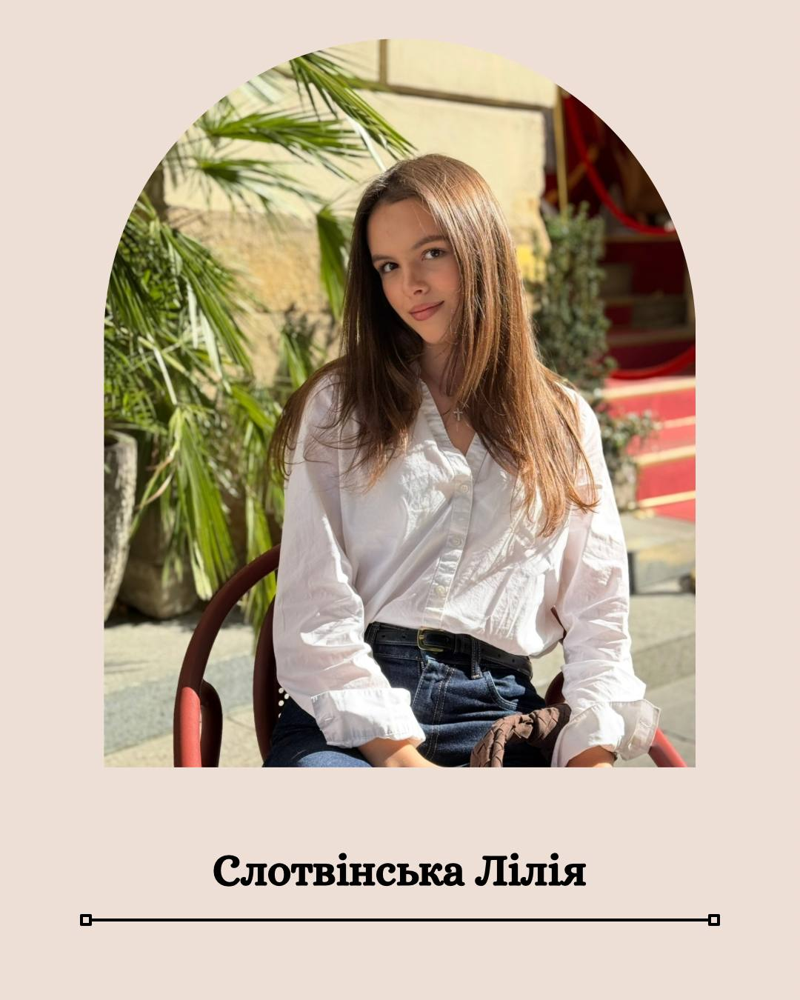
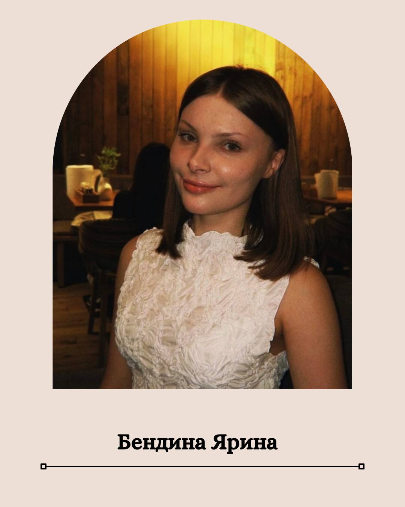
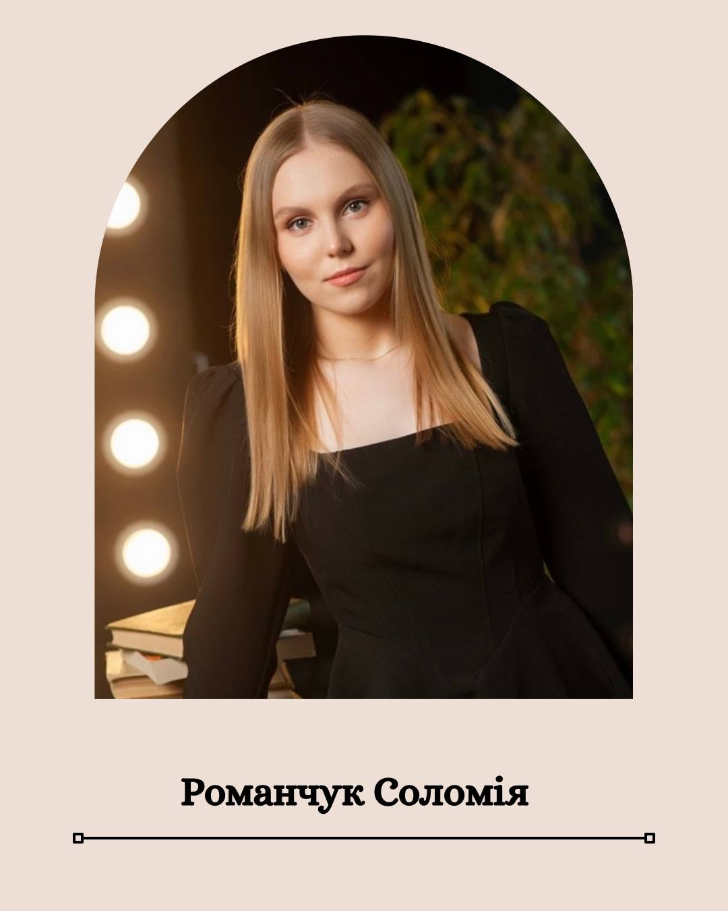
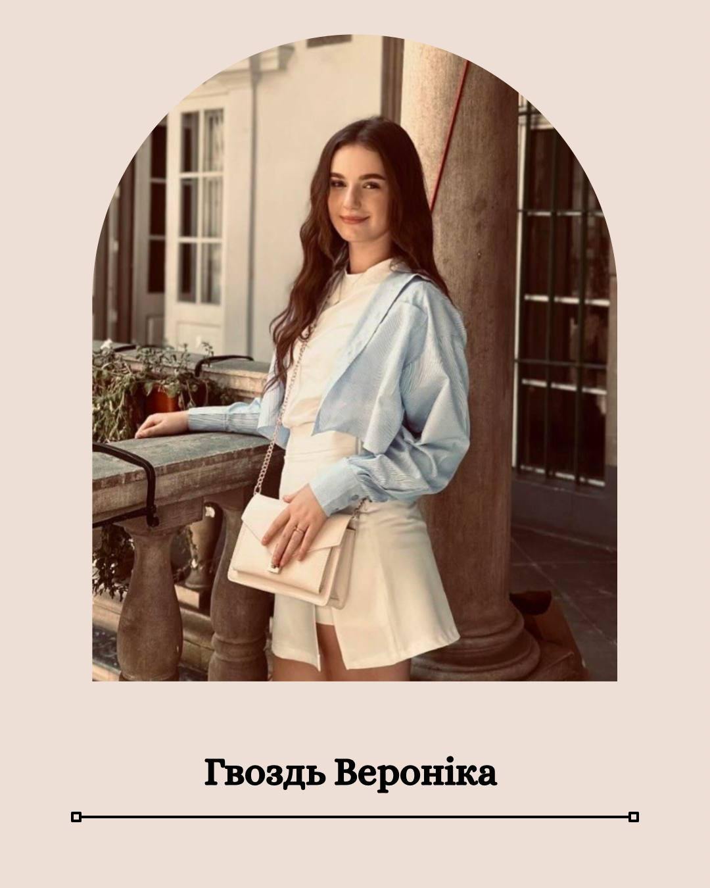

ПРО НАШ ПРОЄКТ
Про нас
та наш проєкт.
Ми, студенти другого курсу Національного університету «Львівська політехніка», Інституту комп’ютерних наук та інформаційних технологій, кафедри прикладної лінгвістики, створили інтерактивний вебсайт, присвячений життю, творчості та багатогранній особистості видатного українського письменника, перекладача, науковця й громадського діяча Івана Яковича Франка.
Ідея створення цього проєкту виникла з бажання по-новому представити постать Івана Франка сучасному поколінню, показати його не лише як відомого письменника зі шкільних підручників, а насамперед як непересічну особистість, чиї думки, переконання та творчість залишаються актуальними й сьогодні. Ми прагнули продемонструвати, наскільки багатою є українська літературна спадщина та як багато цікавого можна відкрити, досліджуючи життєвий шлях наших видатних митців.
НАША КОМАНДА
Наша команда.




НАША МЕТА
Мета нашого
проєкту.
Наш проєкт має на меті нагадати сучасним читачам про цінність української літератури, її самобутність, глибину та значення для формування національної культури. Ми переконані, що творчість українських письменників заслуговує на увагу не лише в межах навчальної програми, адже порушені ними питання людської гідності, свободи, справедливості, любові, суспільних відносин і національної свідомості не втрачають свого значення з плином часу.
Для реалізації цієї ідеї ми створили вебсайт, який поєднує пізнавальну інформацію, візуальні матеріали та інтерактивні елементи. Ми намагалися зробити його не просто електронним джерелом біографічних відомостей, а цікавим простором для знайомства з Іваном Франком, у якому кожен відвідувач зможе знайти щось нове для себе.
НАШ ВЕБСАЙТ
Що можна знайти
на нашому сайті?
Головна сторінка
Знайомить відвідувачів із тематикою проєкту, представляє постать Івана Франка та запрошує до подальшого дослідження його життя і творчої спадщини.
Біографія
Містить інформацію про основні етапи життя письменника: його дитинство, навчання, становлення як митця, літературну, наукову та громадську діяльність. Цей розділ допомагає краще зрозуміти обставини, у яких формувалися його погляди та світогляд.
Твори
Присвячені літературній спадщині Івана Франка. Тут відвідувачі можуть ознайомитися з відомими літературними працями та їхнім значенням для української культури. Цей розділ покликаний зацікавити читачів і спонукати їх звернутися безпосередньо до творів письменника.
Цікаві факти
Відкривають менш відомі сторони життя Івана Франка, його захоплення, досягнення та особливості характеру. Завдяки цьому розділу ми прагнули показати письменника не лише як визначну історичну постать, а і як живу, багатогранну людину.
Цитата дня
Дає змогу щоразу звертатися до влучних і глибоких висловлювань Івана Франка. Цей розділ нагадує, що його думки можуть надихати, спонукати до роздумів і знаходити відгук у сучасному житті.
Хронологія
Представляє найважливіші події життя письменника в послідовному порядку. Вона допомагає простежити його життєвий і творчий шлях, побачити зв’язок між окремими подіями та краще зрозуміти історичний контекст його діяльності.
Інтерактивна мапа
Дозволяє здійснити своєрідну віртуальну подорож місцями, пов’язаними з життям Івана Франка. На мапі позначено дев’ять важливих локацій, кожна з яких супроводжується фотографією та коротким описом. Завдяки цьому відвідувачі можуть побачити, де письменник народився, навчався, жив, працював і творив, а також відчути географічний масштаб його життєвого шляху.